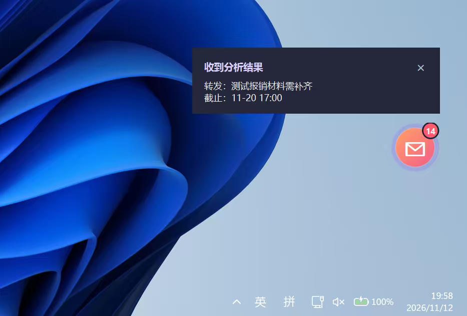
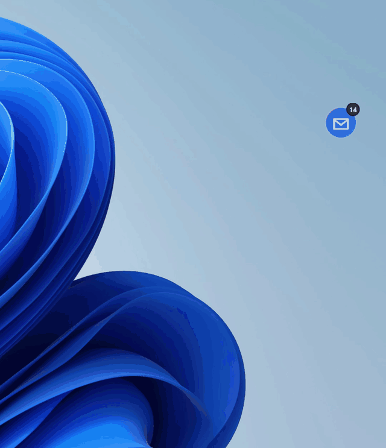
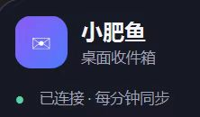
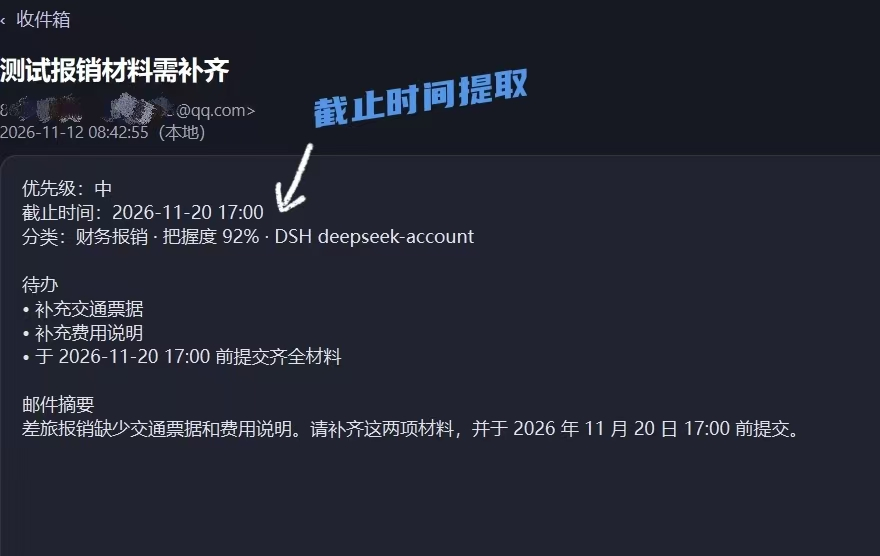
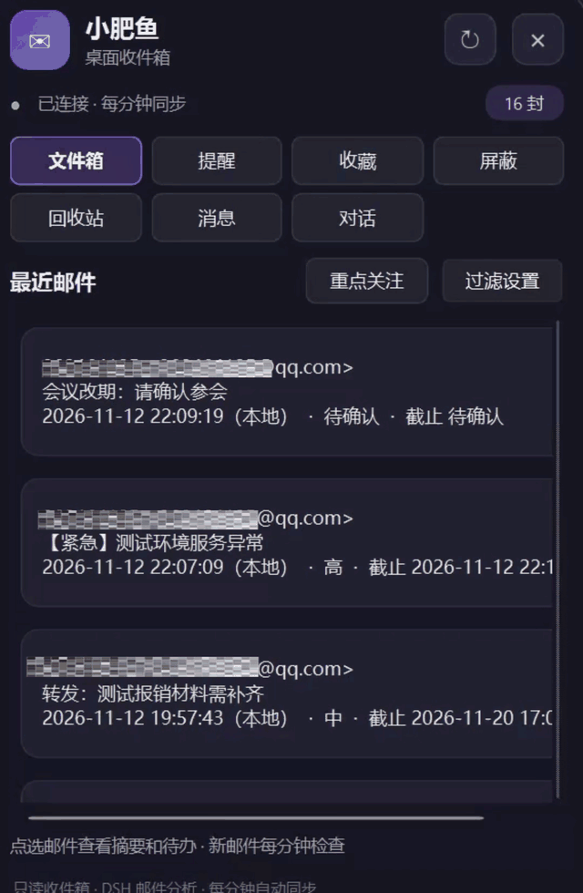
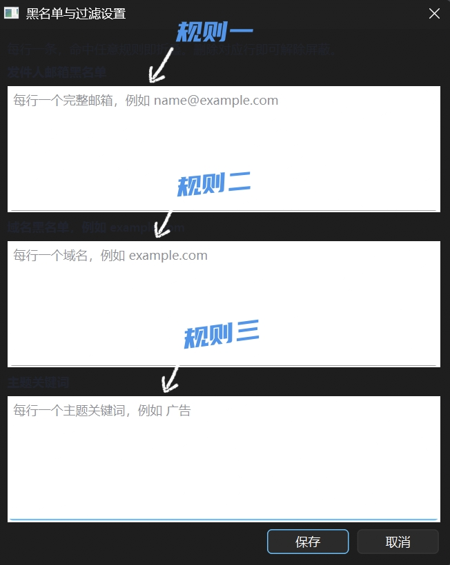
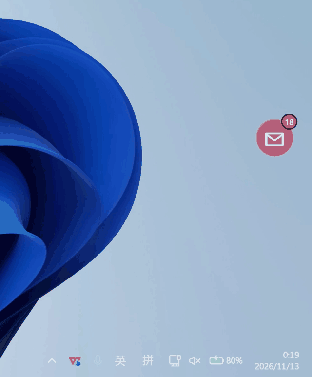
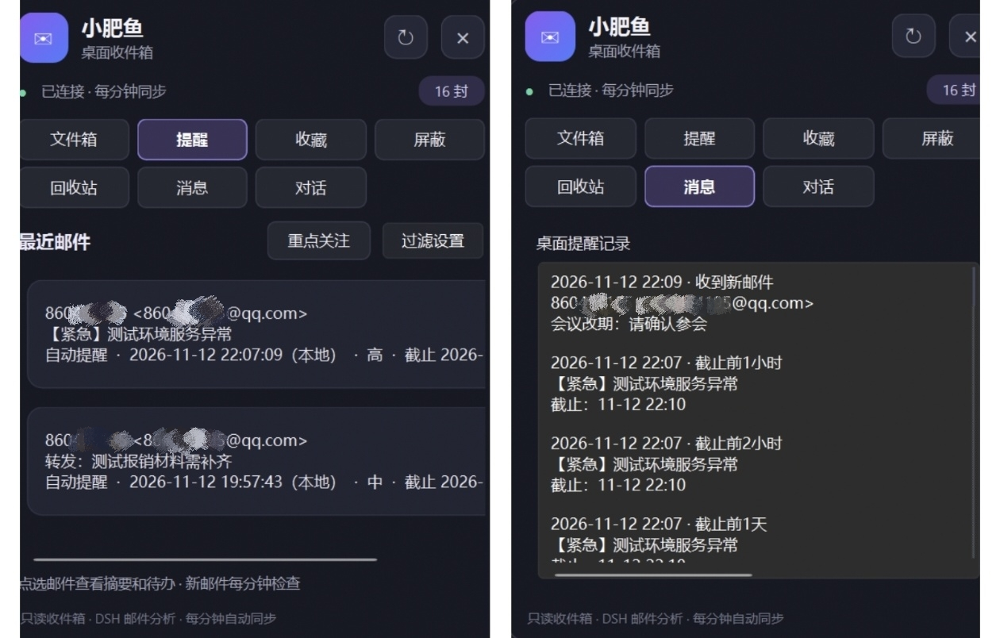
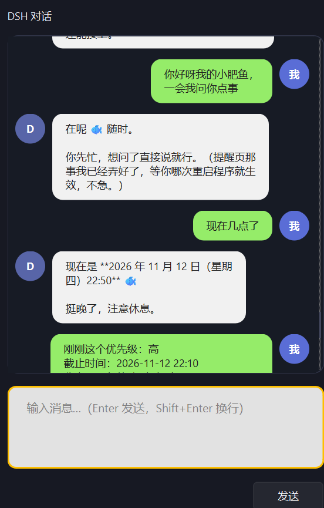
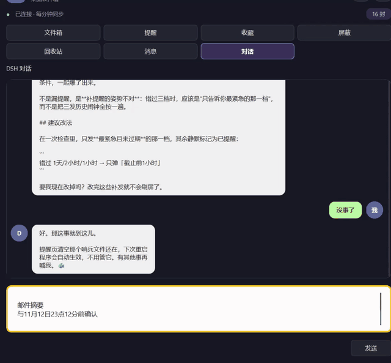

截止时间 不再沉底 ，让待办浮上桌面

— 真实桌面上的邮件提醒
一封邮件你可能只花十秒就读完，但它里面那句“请在周五前提交”，要靠什么记到周五？我的邮件任务越来越多，最怕的不是收不到邮件，而是明明看过，却把藏在正文里的截止时间忘了。新邮件一多，重要的那封很快就沉下去。所以我做了“邮件小肥鱼”：让邮件的行动要求从收件箱里浮到桌面上。
先给你看结果：我电脑桌面上有一个紫色邮件角标。需要看邮件时点开，不需要时收起；当有新消息或识别到临近的截止时间，它会闪动并在旁边弹出提示。下面展示的，都是我正在使用的 Windows 桌面版。

GIF 动图 动图 1 · 桌面入口与提醒气泡
本文看点
01
邮件变待办
02
提醒与规则
03
桌面对话
01

— 顶部连接状态
第一步，点击桌面的悬浮图标打开“文件箱”，看顶部的连接状态；需要立即同步时，点刷新按钮。小肥鱼通过我授权的 Agent Mail 读取最近邮件。选一封邮件，左边能看到发件人和主题；点进去后，长正文被整理成摘要。如果邮件提出具体工作，界面会列出待办；如果能识别日期，则把截止时间和优先级放在明显的位置。
比如邮件里同时说“补交通票据”和“写费用说明”，我需要记住的是两个动作，而不只是“有一封报销邮件”。没有写清日期的邮件会显示“未识别”或“待确认”，不会为了显得聪明就编出一个期限。

— 邮件里的待办与截止时间
这一步的分工是：Agent Mail 提供真实邮件；程序用 agently-cli 读取；DeepSeek Harness（DSH）尝试理解摘要、任务和日期；PySide6 把结果画成桌面小窗。它们各做一件事，少了任何一层，界面和智能分析的表现都会不同。
02
ACTIONS

GIF 动图 动图 2 · 邮件操作与收藏
第二步，在邮件列表里右键目标邮件，打开操作菜单。要反复看的邮件可以收藏；特别在意某个发件人、域名或主题词，可以设为重点关注；不想占据主列表的邮件，可以屏蔽或拉黑。收藏和重点不会改变邮件原来在主列表的位置，屏蔽和拉黑则让它从主列表隐藏。取消收藏要到收藏页操作，避免在主列表里误点。
“移到回收站”指本地隐藏，并没有调用服务端的永久删除。需要找回时，可以打开“回收站”页恢复这封邮件。这样误点后还有改回来的机会，邮箱里的原邮件也不会被程序删掉。

— 发件人、域名、主题关键词规则
03
REMIND

GIF 动图 动图 3 · 截止前自动提醒
第三步，切到“提醒”页查看被提醒的邮件。我做这个项目，核心就是不想靠自己每天翻邮件找期限。自动提醒针对识别出明确截止时间的邮件：分析出结果时提醒一次，距离截止还剩 1 天、2 小时、1 小时时再分别提醒。提醒记录会进入“消息”页，回头还可以找。
手动提醒由我自己设置：右键邮件选“加入／设置提醒”，输入每隔多少分钟提醒一次。没有明确截止时间的邮件也能设置。提醒页会标明“自动提醒”“自动＋手动提醒”或“仅手动提醒”，一眼就能区分来源。
不想再被催时，在邮件上右键打开“取消提醒…”：选“取消手动提醒”，只停止手动重复提醒，原有的自动截止提醒继续；选“取消自动和手动提醒”，两种都停止。如果这封邮件只有手动提醒，就用“取消手动提醒”。取消自动提醒后，还可以在邮件右键菜单里选“恢复自动提醒”。没有写清期限的邮件会标为“待确认”，日期仍要自己核对。

— 提醒页与消息记录
04
CHAT

— 用户与助手的左右气泡对话
第四步，点开“对话”，把邮件摘要或遇到的问题输入底部聊天框，问“这几件事先做哪件”“今天能怎么安排”。发送后，顶部会显示“对方正在输入…”，回复出现在左侧。我可以让它把一封邮件拆成几件能动手的小事，排出今天先做什么、哪些需要等别人确认；做完一部分，再回来告诉它进度，接着商量下一步。
赶上几封邮件一起催、脑子有点乱的时候，我也会先和它聊两句。它能听我把压力说出来，帮我重新梳理事情的轻重缓急，或者陪我聊聊今天的进展。桌面上留着这个入口，就像有个随时能叫出来的小伙伴：需要处理任务时一起想办法，想喘口气时也能说句话。
更让我意外的是，这个聊天框接入的是本机的 DeepSeek Harness（DSH）。在我这台保留项目源码的电脑上，只要 DSH 工具能运行、工作目录有权限，我可以直接说“把聊天气泡改成圆角”或“调整窗口按钮”。它能查看项目文件、修改 PySide6 界面代码；遇到需要审批的操作，窗口会让我决定是否允许。我再检查改动，重启程序看实际效果。
这项改程序的能力依赖本机源码、DSH 的登录和运行环境，以及相应的文件权限。普通安装包能否做到同样的事还需要单独验证；它在我这里真正有用的，是把“想到一个改进”到“看到窗口变化”的距离缩短了。

GIF 动图 动图 4 · 真实 DSH 对话
最后说一句：这个项目已经能在我的电脑上连接真实邮箱并运行。Windows 安装包目前仍是预览包，全新电脑上的首次授权与安装流程还在继续验收。我会继续把这些步骤补齐，让更多人能直接用上它。
我是 翊只小小鱼，全栈软件开发小作家。
如果你觉得今天这篇有收获，欢迎 点赞、在看、转发 三连，我们下篇见。